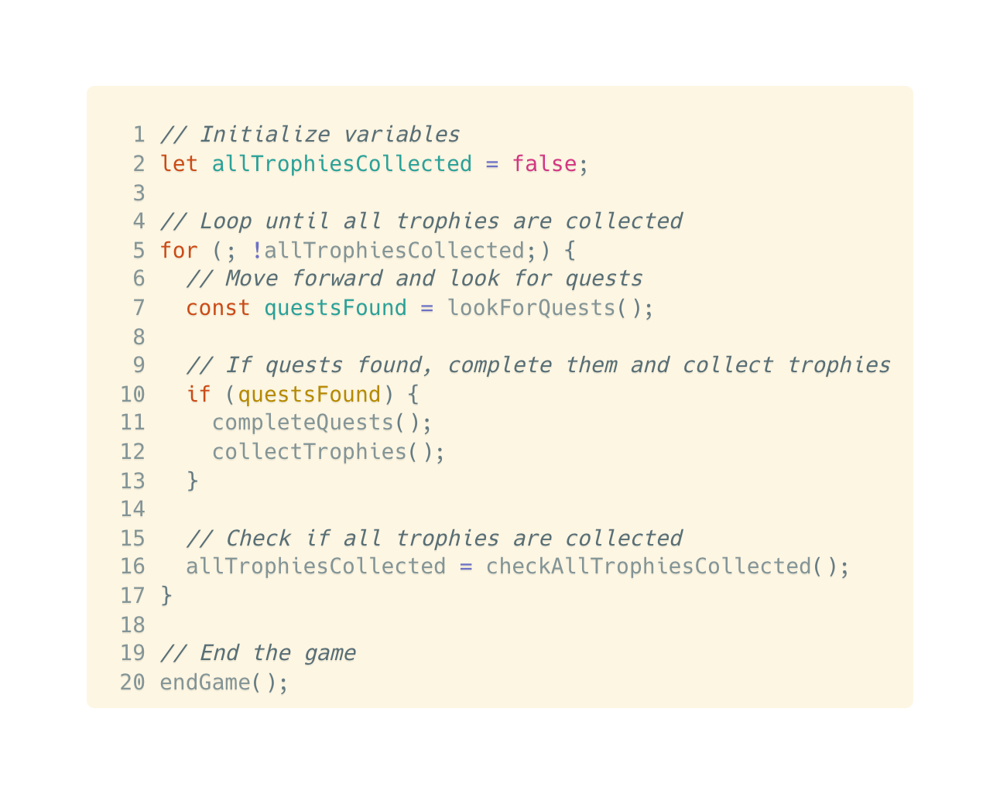
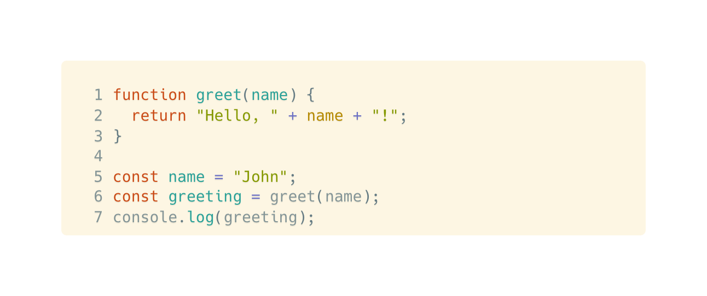

HTML
This blog section is about JavaScript and the Document Object Model (DOM). For this one i decided to geek out a little bit and make things gaming related to make explaining all this a little more fun for me.
I like to look at Html, CSS and JavaScript, as Pokémon
HTML represents the body, providing the basic structure and order. CSS brings styling, giving the Pokémon its unique appearance. JavaScript embodies the special abilities, adding interactivity, functionality and fun!
HTML is the foundation were able to get out layout in order and ready to add all of our CSS and Javascript properties. CSS lets us add our own unique styles and flare to our web pages. JavaScript works with html and
css to give us the moving bits and bobs that make webpages exciting like calculations at the press of a button or submitting forms from your web page to your email address.
Squirtle is everything you need to build dynamic web site!
HTML
Control flow dictates the order instructions are executed. Loops are essential components of control flow that enable the repetition of a specific set of instructions. Here what that would look like as a gamer:
The control flow involves a sequence of steps, starting from starting the game, moving forward, looking for quests, completing quests, and reaching the end. The loop comes into play in step 5, where it checks if all the trophies have been collected. If not, the control flow loops back to step 2, allowing the player to continue searching for quests and collecting trophies until all are obtained.
The DOM, or Document Object Model, is an interface, that represents a web page's structure and content. It organizes elements into a tree-like structure, allowing interaction with HTML and XML documents. Through JavaScript, the DOM enables dynamic manipulation, such as changing text, adding/removing elements, and responding to user interactions, promoting interactivity on web pages.
In an array, data is stored in an ordered list of elements, accessed by number indexes starting from 0. Objects store data as key-value pairs. Each value is linked to a unique key, objects access data by referring to its specific key. Arrays rely on numerical positions, while objects provide flexibility with string or symbol keys.
Functions are blocks of code that perform specific tasks. They help us by promoting code reuse and organization. In the code below creating the function greet(name) we can change the value of name to Sade and return the whole "Hello, Sade!" greeting withought having to change everything.
Because we can let’s look at Annie from League of Legends. Having a function is similar to casting multiple spells to activate Annies pyromania ability.Instead of going through the tedious process of individually casting each spell to apply a stun effect, you can simplify it by creating a function called "castStun". This function neatly packages the required spellcasting sequence, allowing you to trigger the Pyromania stun effect with just a single function call. Like shortcuts, functions makes your code more organized and helps you play better as Annie. Instead of getting caught up in complicated steps, you can focus on using the stun effect at the right time to win the game.